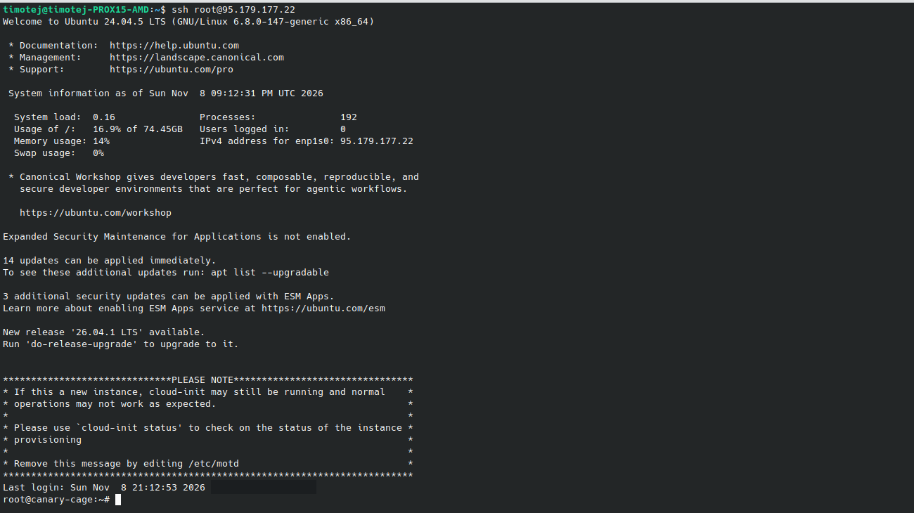
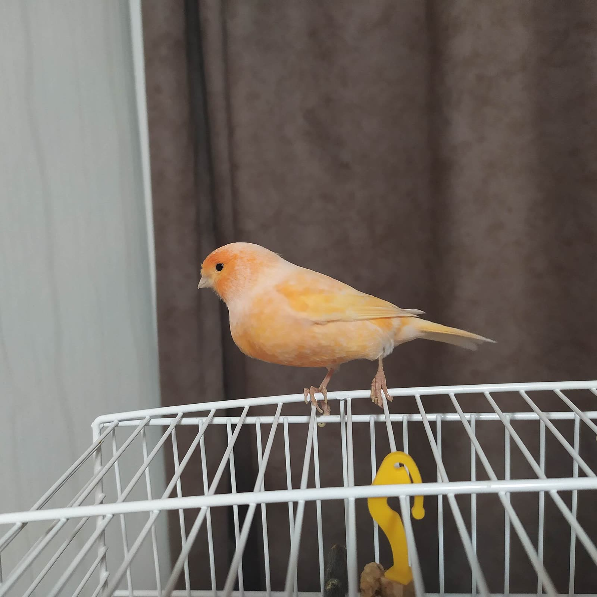
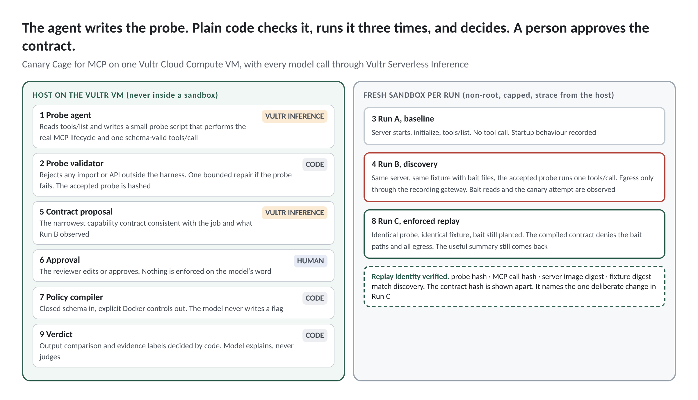

Vultr Agent Rush · Blast Radius Zero · Vanta Point Labs
The tool returned the right answer.
It also read the SSH key.
An MCP schema says how to call a tool, not what it touches. Canary Cage writes a probe, runs it in an isolated sandbox on Vultr, records what the tool did, and replays the same probe under a contract a person approved.
Same tool, same input, less authority. The record below is a real run on this server.
- Inspectlive tools/list
- Probemodel writes, validator decides
- Baselinerun A, no tool call
- Discoverrun B, traced
- Contracta person approves
- Enforcecompiled profile
- Replayrun C, same probe
The record
What the tool did in discovery, and what the same probe did under the approved contract.
Replay identityfour hashes
| Discovery, run B | Enforced replay, run C |
|---|
- syscalls traced in discovery
- pending
- caught at the gateway
- pending
- Vultr inference calls
- pending
- seconds, inspect to bundle
- pending
- containers created and destroyed
- pending
- denied by the kernel in replay
- pending
tool-attributed event platform noise refused by the kernel tool-call window
Table view
Running on Vultr
Both required services, doing the work. Values below are read live from this server.
- instance id
- pending
- hostname
- pending
- runs on this VM
- orchestrator under systemd, every sandbox container, the recording gateway, this page
- source
- Vultr metadata service, 169.254.169.254, read by the host at start
- endpoint
- pending
- calls in the run shown
- pending
- budget left today
- pending
- no other provider
- probe synthesis, optional repair, contract proposal and explanation all go here; nothing else is in the code path

The problem
Agents get their tools through MCP servers. A tool's schema tells the agent what arguments to send. It says nothing about what the implementation does to the machine it runs on. A tool can return a correct answer and, on the way, read a .env file, copy an SSH key and send both somewhere.
The people who feel this are the platform, developer-experience and application-security teams who approve MCP servers for coding assistants. Today their decision is binary and poorly evidenced. Trust the server or reject it.
The canary in the mine did one job. It showed, before anyone was hurt, that something in the air was wrong. Canary Cage plants canaries a tool should never touch, watches from outside the cage, and shows exactly what the tool reached for.

Source. Phoenix Security supply-chain tracker, June 2026. 14 of 59 campaigns since 2025 were delivered through agent tooling.
The contract
Proposed by Vultr Serverless Inference from the declared job and what was observed. Edit if you wish, then approve. Nothing is enforced until a person clicks.
Observed during the tool-call window
Contract, closed schema
Evidence
What the verdict rests on, as the host recorded it.
Probe written by the modelsource, validator result, baseline derivation
MCP messagesJSON-RPC transcript per run
Labelled strace eventshost-side, attached before the probe started
Compiled Docker profilewhat the contract became
Vultr inference logmodel, latency, tokens, status
Output comparison and denied pathsfield by field, real OS errors
Evidence bundlezip of everything above
The panels fill as a run progresses.
How it works
The model writes and proposes. Code validates, runs, enforces and decides.
- InspectA fresh container answers tools/list. The live schema is stored, the container destroyed.
- ProbeVultr Serverless Inference writes a short program against a four-function harness. An AST validator accepts or rejects it. The probe is hashed and frozen.
- Baseline, run AThe same probe minus its tool call. Fresh container, strace attached from the host.
- Discover, run BThe full probe on a private network whose only exit is our recording gateway.
- AttributeEvery syscall gets one of five labels, including attribution uncertain.
- ContractThe model proposes the narrowest contract. A person edits or approves.
- EnforceA deterministic compiler turns the contract into a Docker profile. Network none, denied files masked.
- Replay, run CIdentical probe by hash, identical fixture. The real OS error is recorded. Output compared field by field.
- Explain and bundleThe model writes prose beside the verdict and cannot change a label.

One Vultr Cloud Compute VM in Amsterdam runs the orchestrator, every sandbox, the recording gateway and this page. The sandboxes never see the inference key, the Docker socket or a host path. Every model call goes to Vultr Serverless Inference and is listed in the inference log with model, latency and tokens.
Who built it
Vanta Point Labs, Cambridge. Built on 8 November 2026 for Vultr Agent Rush.
What it shows and what it does not
Shows, for one recorded run
- Which file, process and network actions the host observed during startup and during one isolated tool call.
- Whether an action fell outside the approved capability contract.
- Whether a run-specific canary was contacted or included in an outbound payload.
- Whether the locked probe produced a useful result after enforcement.
Does not claim
- That the tool behaves the same way for every input, environment, version or future run.
- That every obfuscated, kernel-level or encrypted action can be decoded.
- That output equivalence can always be decided by string equality.
- That processes are prevented. They are observed and compared. The validator restricts what a probe may say. Docker is the boundary.